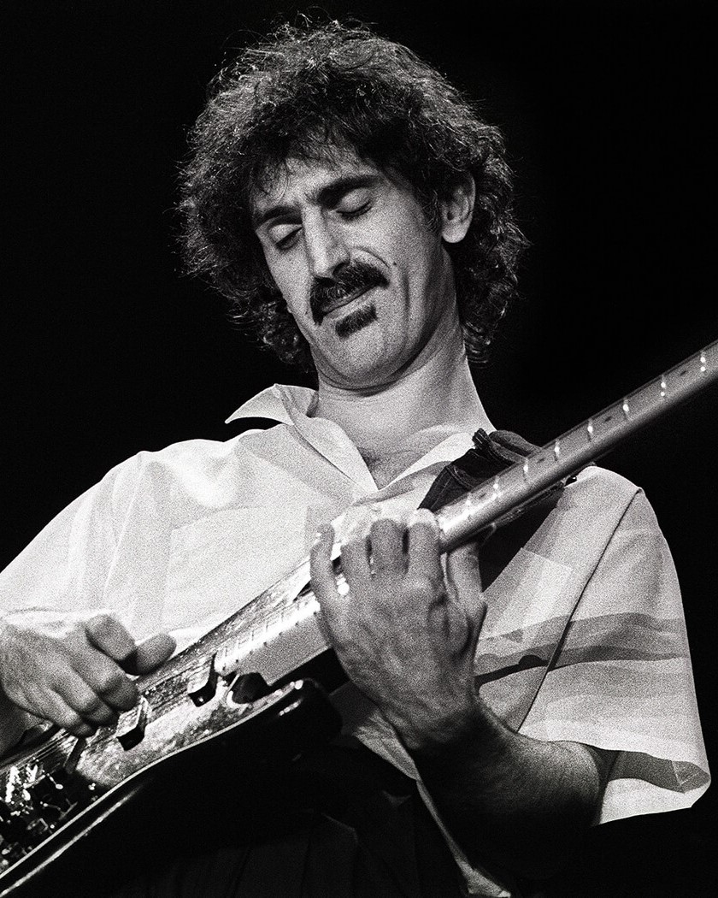

YesA Yes egy 1968-ban létrehozot, főként progresszív rock banda. Nagy alaknak számít a Yes a progresszív rock világában, hiszen a 1970-es években ők voltak a műfaj zászlóshajói. Zenéjükkel segítettek a prog rock hangzás kialakulásában, és sok klasszikus dalt, nagylemezt alkottak a műfajban. A zenekar eredeti felállása a következő volt: Jon Anderson, mint énekes; Tony Banks, mint gitáros; Chris Squire, mint basszusgitáros; Bill Bruford, mint dobos; Tony Kaye, mint billentyűs. A jelenlegi (2023) felállás egyike sem eredeti banda tag. Az első lemez, amely már nagyobb közönséghez is eljutott (ez volt időrendileg a harmadik albumuk), az az 1971-es The Yes Album volt. Legelső albumuk egy self-titled lemez volt, ami még nem számított prognak. Csak egy-két dalról lehet elmondani, hogy előre segtették a banda hangzásának kialakítását. A második, Time and a Word, már több helyen tartalmazta a progos elemeket, de az a hangzás a már előbb megemlített The Yes Albumra fog kialakulni. A második Onnantól kezdve jobbnál jobb lemezeket adtak ki. Erre jó példa a második 1971-s lemezük, a Fragile; az 1972-es Close to the Edge; az 1973-as Tales from Topographic Oceans. Azóta a banda nem hoz olyan sikereket, mint egykoron. 1994-ben bekerültek a Rock and Roll Hall of Fame-be (rock and roll dicsőségfal). Több albumuk lett ezüst, arany és platina lemez. Kétségtelen, hogy a Yes nélkül a progresszív rock, sőt, akár a zene sem lenne ugyan az, mint ma. |
|---|

Frank ZappaFrank Zappa pályafutását a Mothers of Inventionben kezdte 1966-ban. FZ 1969-re mesterévé vált a gitárnak, és a progresszív rockban számos klasszikus albumot adott ki. Zenéiben humort, iróniát, történet mesélést és elvontságot használt, élő fellépésein komplexen játszott, de oly' módon, hogy az szórakoztató legyen a hallgató/néző számára. Prog rock/jazz fusion remekműnek számít a Hot Rats és az Apostrophe ('). A progresszív rock egyik legismertebb és elismertebb alakja volt, és még ma is annak tartják. FZ-nek egy igazán kiemelkedő album sikere sem volt, helyette, a már fentebb említett élő fellépései miatt szerették őt. Tudása elvarázsolta azokat, kik hallották őt. Nagyon sok jót kapott, de legalább annyi rosszat is. Nagyon-nagyon sokan voltak, kik bírálták munkásságát és leszólták azt. Zappa egy megnyílvánulásban és zeneileg nagyon megosztó személy volt, és még mai napig is az. Az amerikai Saturday Night Live műsorból ki is lett tiltva. Tagadhatatlan, hogy amit hátrahagyott, azt megismételni nem lehet. Tragikus 1993-ban bekövetkezett halála után, 1995-ben bekerült a Rock and Roll Hall of Fame-be. Frank Zappa 1991. június 30-án fellépett a Tabán zenei fesztiválon magyar zenészek kíséretével. Készült a FZ-vel egy interjú, melyben elmondta, hogy ő zeneszerzőnek tartja magát, minstem zenésznek. Elárulta még, hogy politikai pályára is szeretett volna törni, de, mint tudjuk, ez nem tudta megvalósulni. |
|---|
Emerson, Lake & PalmerAz Emerson, Lake & Palmer egy 1970-ben alapított banda volt. A felállás az alábbi volt: Greg Lake, mint énekes és basszusgitáros; Keith Emerson, mint billentyűs; Carl Palmer, mint dobos. Jól ismert alaknak számít az ELP. A dalaik ritkán tartalmaznak elektromos gitárt (melyet szintén Greg Lake játszott), helyette Keith Emerson gyors és komplex billentyűsjátéka dominált. Emersont stílusárol egyből fel lehet ismerni, ha egyszer meghalljuk. Keith Emerson volt a szintetizátorok Jimi Hendrixe, ami meg is mutatkozik. Ő segítette a szintetizátorok használatát népszerűsíteni. Szólói mindig hatottak a hallgatóra. Többféle bilentyűsön is játszott: Moog analóg szintetizátoron; elektromos és klasszikus zongorán; orgonán; mellotronon. Carl Palmer játéka sem kifelejtendő. Gyors és erőteljes játéka megadja az ELP klasszikus hangzását. |
|---|